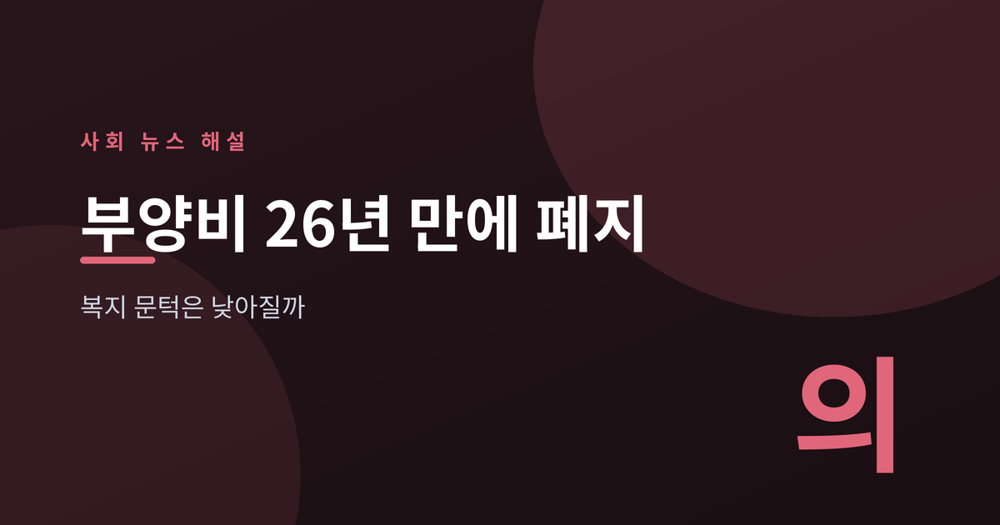
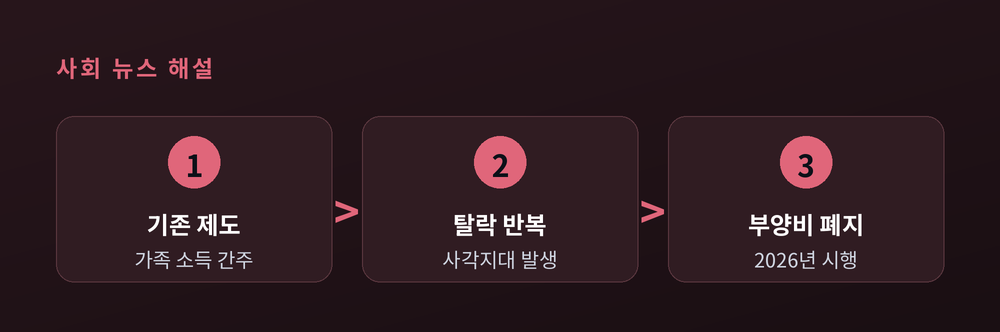
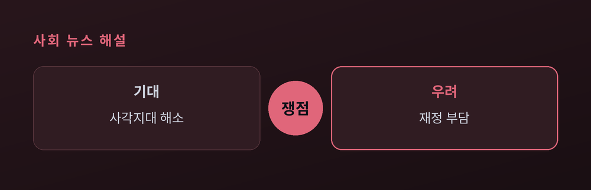
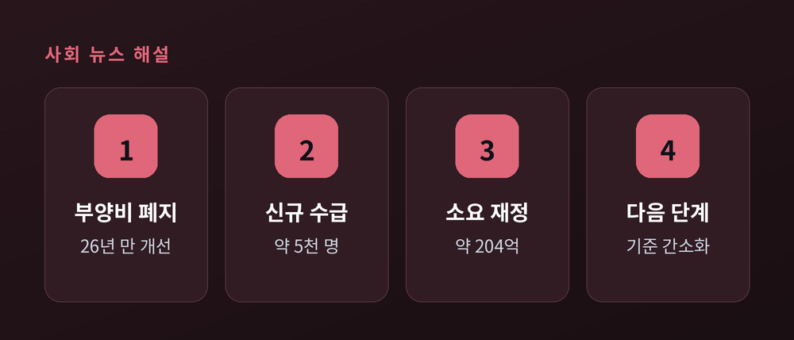

복지 문턱은 낮아질까

가족과 연락이 끊긴 지 오래인데도, 서류상 자녀가 있다는 이유로 의료급여에서 탈락하는 저소득층이 있었다. 정부가 이 오랜 문턱을 손질하기로 했다. 26년간 유지된 의료급여 '부양비' 제도의 폐지가 확정된 것이다.
의료급여는 저소득층의 병원비를 국가가 지원하는 제도다. 이 가운데 부양비는, 부양능력이 애매한 가족이 수급자에게 생활비를 보태준다고 간주해 그 몫을 수급자 소득으로 잡는 계산 방식이다. 실제로 돈을 받지 않아도 소득이 있는 것으로 처리돼, 수급 자격에서 탈락하는 사례가 반복됐다.
정부는 7월 중앙생활보장위원회에서 부양비 폐지를 의결하고, 2026년 시행 계획을 발표했다. 1999년 제도 도입 이후 26년 만이다. 보건복지부는 이번 조치로 약 5,000명이 새로 수급 대상이 될 것으로 내다봤다.

핵심은 '비수급 빈곤층' 문제다. 실제로는 가난하지만 가족 기준에 걸려 지원을 못 받는 사각지대를 줄이자는 취지다. 관련 수치는 아래와 같다.
| 항목 | 내용 |
|---|---|
| 시행 시점 | 2026년 |
| 신규 수급 | 약 5,000명 |
| 소요 재정 | 약 204억 원 |
| 제도개선 예산 | 215억 원 |
경향신문은 사설에서 "복지 사각지대 해소에 속도를 내야 한다"고 평가했다. 반면 부양의무자 기준 자체가 사라진 것은 아니라는 점도 짚어야 한다. 비마이너 등 복지 현장에서는 "부양비 폐지가 곧 부양의무제 폐지는 아니다"라며, 소득·재산 기준은 여전히 남아 있어 효과가 제한적일 수 있다고 지적한다.

찬성 측은 실효성 없는 계산 방식이 취약계층을 배제해 온 만큼 폐지가 마땅하다고 본다. 신중론은 재정 지속 가능성을 든다. 역대 정부가 이 기준을 쉽게 손대지 못한 배경에도 재정 부담이 있었다.
정부는 향후 부양의무자 기준을 단계적으로 간소화하는 로드맵을 상반기 중 마련하겠다고 밝혔다. 고소득·고재산 부양의무자에게만 기준을 적용하는 방향이 검토된다.

이번 폐지는 복지 문턱을 낮추는 '첫 단추'로 평가된다. 다만 5,000명이라는 규모는 전체 사각지대에 비하면 시작점에 가깝다.
핵심 한 줄: 계산식 하나가 바뀌자, 서류에 갇혀 있던 사람들이 다시 보이기 시작했다.
남은 질문은 이것이다. 이 문은 얼마나 더 열릴 것인가.
참고 출처: 보건복지부, 경향신문, 전자신문, 비마이너